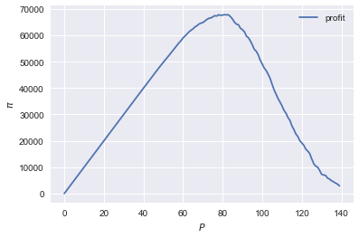
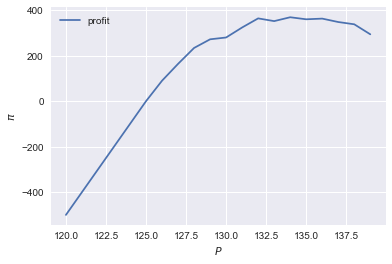
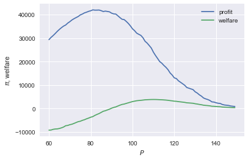
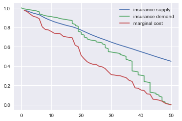
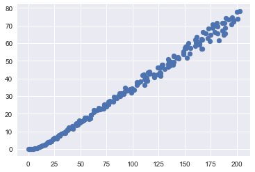
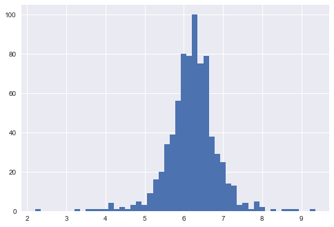
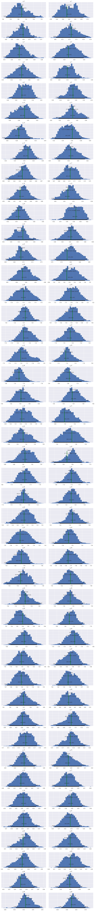
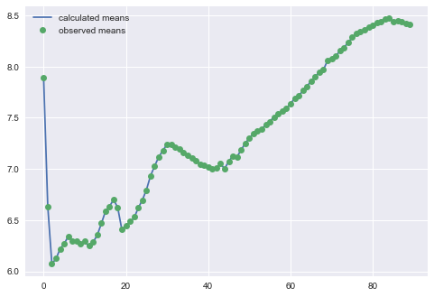
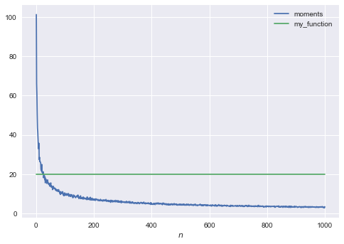

Doing economics with python
Table of Contents
1 Introduction
This is the notebook to accompany the course Applied Economic Analysis at Tilburg University. The idea is to bring economic concepts "alive" by programming them in python. The choice of topics is based on tirole_2017.
The point is not that we go into a model in detail. Instead, we sketch the trade offs and then model these in python. We then make graphs to explain the intuition. In this way, you learn both python and to use economics in a more "broad brush" fashion than taking the third derivative.
2 Python packages that we will be using
We need the following packages to run the code below. If you get an error saying that the package is not available, you can install it using either pip install or conda install.
import pandas as pd import numpy as np import pymc3 as pm import matplotlib.pyplot as plt import seaborn as sns from scipy import stats, optimize import random import wbdata as wb plt.style.use('seaborn') %matplotlib inline
/Users/boone/anaconda3/lib/python3.6/site-packages/h5py/__init__.py:36: FutureWarning: Conversion of the second argument of issubdtype from `float` to `np.floating` is deprecated. In future, it will be treated as `np.float64 == np.dtype(float).type`. from ._conv import register_converters as _register_converters
3 Why do we love the market?
Many (but not all) economists love the market as an organizing institution. This affection for markets is traced back by some to Adam Smith and his "invisible hand". Others may not think that the market is so great, but basically distrust other organizing institutions like a government. They will point, for instance, to the fall of communism in the former Soviet Union.
Although you, as an economist, have seen many market models already,
it may be illustrative to go back to basics. To understand the
advantages of the market, let us consider a very simple economy. We
focus on one type of product and there is an exogenous endowment of
this product (supply) equal to number_of_goods. Further, in this
economy there are number_of_agents agents who have a valuation for
this good which is randomly drawn from a normal distribution. An agent
can at max. consume one unit of the product and her utility is then
given by her valuation. The value of consuming zero units and the
additional value of consuming more than one unit both equal 0.
The vector valuations contains for each agent her valuation and we sort this vector such that the first agent has the highest valuation.
number_of_agents = 1000 number_of_goods = 100 valuations = sorted(pm.Normal.dist(100,20).random(size=number_of_agents),reverse = True)
Note that we are using pymc3 here to generate random numbers from a distribution. There are also other python libraries which can do this, e.g scipy. We use pymc3 as we will use it later for estimation as well.
Question What is the economic name for the following expression? To answer this question, you need to understand both how indexing works in python and which economic concept is captured by this expression.
print("{0:.2f}".format(valuations[number_of_goods]))
125.15
Suppose that we have an omniscient social planner who knows the valuation of every agent in the economy. This planner aims to maximize the (unweighted) sum of agents' utilities.
Question Calculate the total welfare that this planner can achieve. Denote this value max_welfare.
Hence, this is the best that we can do. It gives us an upperbound on the welfare that can be achieved. Having an omniscient social planner seems unrealistic, but perhaps there is an institution that can achieve this outcome without omniscient intervention. You guessed it…
3.1 market outcome
Now we compare the maximum welfare that a planner can achieve with the market outcome.
Question Define a function demand(p,valuations) which has as arguments a price \(p\) and a vector of agents' valuations. This function returns the number of agents who are willing to buy the product at price \(p\). Since each agent who buys, buys exactly one unit in our set up, this function returns demand at each price.
Question Using matplotlib plot (fixed) supply and the function demand against price, where we maintain the economic convention of having quantity on the horizontal axis and price on the vertical axis.
In order to calculate the equilibrium price, we define a function excess_demand. We will then look for the price where excess_demand equals 0; this is the equilibrium price.
def excess_demand(p,valuations,number_of_goods): return demand(p,valuations)-number_of_goods
In order to find the equilibrium price, we use from scipy.optimize the function fsolve. To illustrate, there are also people at stackoverflow discussing this.
price = optimize.fsolve(lambda x: excess_demand(x,valuations,number_of_goods),120) print(price)
[125.18448497]
So, now we know the equilibrium price
Exercise Calculate total welfare at this equilibrium price.
Exercise How does this welfare compare to the maximum welfare that the omniscient social planner can achieve? Recall that this level is:
max_welfare
13407.45396157873
3.1.1 elastic demand and supply
Up till now we assumed that supply was inelastic: there was a given endowment and this was auctioned off to consumers. Now we assume that some agents initially own the goods. However, these agents are not necessarily the ones that value the goods the most.
In particular, we give number_of_goods agents one unit of the good. They become suppliers.
random.shuffle(valuations) valuations_supply = valuations[:number_of_goods] valuations_demand = valuations[number_of_goods:]
Exercise Define a function supply which depends on the price and the valuations of the suppliers.
Exercise Use matplotlib to plot demand and supply in a single figure.
Exercise Define the function demand_minus_supply which looks
like excess_demand above but now with elastic supply. The function
depends on the price, the valuations of people demanding the good and
the valuations of people supplying it.
Then use fsolve to find the equilibrium price.
Exercise How does the equilibrium price here compare to the equilibrium price above with exogenous supply? Is the price here higher? Why (not)? Is welfare higher here than above?
4 why do others not love the market?
Although the results above look great, the assumptions we made, may not be realistic in every market. Without saying so, we assumed above that the market was perfectly competitive without external effects. Here we program three reasons why the market outcome may not necessarily lead to maximum welfare. First, we look at income inequality and the problem that this causes for the market. Then we consider market power and finally we model external effects.
4.0.1 income distribution
In micro economics we usually do not do much with income distributions. Often because models where income distributions play a role are tricky to solve analytically. But here we program/simulate and hence we do not worry about analytical solutions.
Now in addition to the valuations introduced above (the utility an agent gets from consuming the good), we need an income distribution. The former determines the willingness to pay (wtp) for an agent, the latter the price an agent can pay. A consumer is willing to buy the product at a price \(p\) if both her wtp and her income exceed \(p\).
First, we randomly draw an income for each agent in the economy.
incomes = pm.Normal.dist(100,20).random(size=number_of_agents)
Next, we need to redefine demand, now denoted demand_2 which takes into account both whether an agent values the good more than \(p\) and whether she can afford \(p\).
def afford(p,incomes): return incomes>p def wtp(p,valuations): return valuations>p def demand_2(p,valuations,incomes): return np.sum(afford(p,incomes)*wtp(p,valuations))
Exercise Define the function excess_demand_2 which depends on \(p\), agents' valuations, incomes and number of goods (which we assume to be inelastically supplied again).
Exercise Use fsolve to determine the equilibrium price in this case. Is this price higher or lower than above? Why?
Exercise Calculate welfare in the market equilibrium. How does it compare to max_welfare?
Question Model an economy where an increase in income inequality reduces welfare.
4.0.2 market power
Warning We are going to do a couple of things wrong in this section. No need to panic; this actually happens a lot when you are programming. Use your economic intuition to see where the mistakes are and correct them.
Suppose that we now give all the products to 1 agent who then owns number_of_goods units of this good. To simplify, we assume that this agent values the good at 0.
Question Suppose we use the function demand_minus_supply defined above to calculate the equilibrium price. Would the equilibrium price increase due to market power? Why (not)?
Perhaps a monopolist would not use an auction to sell all the goods. Let's calculate the profits of the monopolist as a function of the price and the valuations of the agents.
def profit(p,valuations): return p*demand(p,valuations)
range_p = np.arange(0,140) plt.plot(range_p, [profit(p,valuations) for p in range_p], label = "profit") plt.legend() plt.xlabel("$P$") plt.ylabel("$\pi$") plt.show()
<Figure size 432x288 with 1 Axes>

It looks like the profit maximizing price is around 80. Recall the equilibrium price under perfect competition above:
price
array([125.18448497])
Exercise Since when does a monopolist charge a lower price than a perfectly competitive market?
Assignment
Calculate the profit maximizing price in this case.
def profit(p,valuations): return p*min(demand(p,valuations),number_of_goods)
range_p = np.arange(120,140) plt.plot(range_p, [profit(p,valuations) for p in range_p], label = "profit") plt.legend() plt.xlabel("$P$") plt.ylabel("$\pi$") plt.show()
<Figure size 432x288 with 1 Axes>

4.0.3 merger simulation
In this section, we model a more standard oligopoly market with Cournot competition. We start with three firms and then calculate what happens if two firms merge such that only two firms are left in the industry. Hence, we first calculate the equilibrium with three firms, denoted by 1, 2 and 3. Then firms 2 and 3 merge so that we are left with 2 firms; denoted by 1 and 2.
We are interested in the effects of the merger on the equilibrium price.
We assume that before the merger each firm has constant marginal costs equal to 0.3. We assume a simple linear (inverse) demand curve of the form \(p=1-Q\) where \(p\) denotes price and \(Q\) total output on the market. Total output equals the sum of each firm's output: \(Q= q_1 + q_2+q_3\).
The function reaction gives the optimal reaction of a firm to the total output Q_other from its competitors. In this function, we use the routine fminbound. Python does not have maximization routines, hence we minimize "minus profits" (which is the same from a mathematical point of view). The parameters 0,1 in this routine give the bounds over which we optimize. Since demand is of the form \(p(Q)=1-Q\), we know that no firm will choose \(q>1\); further we also know that \(q \geq 0\).
The fixed point makes sure that for each of the three firms, their output level is equal to its optimal reaction to the output levels of its competitors. If each firm plays its optimal response, given the actions of the other players, we have a Nash equilibrium.
c0 = 0.3 vector_c = [c0]*3 def p(Q): return 1 - Q def costs(q,c): return c*q def profits(q,Q_other,c): return p(q+Q_other)*q-costs(q,c) def reaction(Q_other,c): q1 = optimize.fminbound(lambda x: -profits(x,Q_other,c),0,1,full_output=1) return q1[0] def fixed_point_three_firms(vector_q,vector_c): return [vector_q[0]-reaction(vector_q[1]+vector_q[2],vector_c[0]), vector_q[1]-reaction(vector_q[0]+vector_q[2],vector_c[1]), vector_q[2]-reaction(vector_q[0]+vector_q[1],vector_c[2])]
We calculate the equilibrium output level, price and the Herfindahl index. The Herhindahl index is defined as the sum of squared market shares:
\begin{equation} \label{eq:1} H = \sum_j \left( \frac{q_j}{\sum_i q_i} \right)^{2} \end{equation}If we have \(n\) symmtric firms, we have \(H = 1/n\). Hence, more competition in the form of more firms in the market leads to a lower Herfindahl index.
initial_guess_3 = [0,0,0] Q0 = np.sum(optimize.fsolve(lambda q: fixed_point_three_firms(q,vector_c), initial_guess_3)) P0 = p(Q0) H0 = 3*(1.0/3.0)**2 print("Before the merger") print("=================") print("total output: {:.3f}".format(Q0)) print("equil. price: {:.3f}".format(P0)) print("Herfn. index: {:.3f}".format(H0))
Before the merger ================= total output: 0.525 equil. price: 0.475 Herfn. index: 0.333
Exercise Define a function fixed_point_two_firms with the same
structure as the function fixed_point_three_firms above, except that
it derives the equilibrium output levels for a duopoly (two firms).
Test this function by showing that each of the two firms produces
0.3333 in case both firms have zero costs; use fsolve as above.
The Dutch competition authority, ACM, is asked to evaluate the effects of a merger between firms 2 and 3. Firms 2 and 3 claim that by merging they can reduce their constant marginal costs. But it is not clear by how much they will reduce their costs.
The ACM assumes that the marginal cost level of the merged firm is
uniformly distributed between 0 and the current marginal cost level
c0. The merger will not affect the marginal cost level of firm 1 who
does not merge. Firm 1's cost level remains c0.
The next cell generates a vector of cost levels for the merged firm,
denoted c_after_merger. Then it calculates the equilibrium output
levels for (the non-merging) firm 1 and (the merged) firm 2.
c_after_merger = pm.Uniform.dist(0,c0).random(size = 100) initial_guess = [0.2,0.2] q1_after_merger = [optimize.fsolve(lambda q: fixed_point_two_firms(q,[c0,c]), initial_guess)[0] for c in c_after_merger] q2_after_merger = [optimize.fsolve(lambda q: fixed_point_two_firms(q,[c0,c]), initial_guess)[1] for c in c_after_merger]
Exercise Create a dataframe called df_after_merger with
three columns: c_merged_firm, output_non_merging_firm,
output_merged_firm containing resp. the cost level of the merged firm,
the output level of firm 1 and the output level of firm 2.
Exercise Add three columns to the dataframe with resp. total
equilibrium output on the market, Q, equilibrium price, P and the
Herfindahl index, H.
Exercise Make a histogram of the equilibrium price P after
the merger. Also indicate in the histogram the equilibrium price before
the merger P0. Label the horizontal axis with \(P\).
[hint: you may want to use matplotlib's hist, vlines and legend to
make this graph (e.g use google to find these functions); but feel free
to use something else]
Excersise Explain why sometimes the equilibrium price after the merger exceeds the equilibrium price before the merger and sometimes it is lower than the pre-merger price.
What is calculated in the following cell?
np.sum(df_after_merger.P < P0)/len(df_after_merger.P)
0.5
Exercise Make a graph with the Herfindahl index on the
horizontal axis and the equilibrium price on the vertical axis. This is
straightforward for \((H,P)\) after the merger as both values are in the
dataframe. Add in another color, the pre-merger combination (H0,P0)
that we calculated above.
Exercise What does the figure above illustrate about the relation between the Herfindahl index and the equilibrium price? To illustrate, some people think that lower values of the Herfindahl index are associated with more competitive outcome. Would you agree with this?
4.0.4 external effects
A final reason why people are not always enthusiastic about markets is the presence of external effects. One can think of pollution associated with the production of a good. We model this as follows. Assume a monopolist can produce the product at cost \(c q\). But production leads to an external effect equal to \(\gamma q\). Hence, the social cost of production equals \((c+\gamma)q\)
We can model this as follows.
number_of_agents = 1000 valuations = np.array(sorted(pm.Normal.dist(100,20).random(size=number_of_agents),reverse = True)) def demand(p,valuations): return sum(valuations>p) c = 30 γ = 80 def costs(q): return c*q def externality(q): return γ*q def profit_c(p,valuations): return p*demand(p,valuations)-costs(demand(p,valuations)) def welfare_e(p,valuations): return np.sum(valuations[:demand(p,valuations)])-costs(demand(p,valuations))-externality(demand(p,valuations))
Exercise Show graphically that the welfare maximizing price exceeds the profit maximizing price.
range_p = np.arange(60,150) plt.plot(range_p, [profit_c(p,valuations) for p in range_p], label = "profit") plt.plot(range_p, [welfare_e(p,valuations) for p in range_p], label = "welfare") plt.legend() plt.xlabel("$P$") plt.ylabel("$\pi$, welfare") plt.show()
<Figure size 432x288 with 1 Axes>

Exercise What is the interpretation of this result? Which policy instrument can the government use here?
5 Asymmetric information
One of the reasons why markets (or other institutions for that matter) work less well than a naive observer may hope is asymmetric information. We consider here both adverse selection and moral hazard. Adverse selection we analyze in the context of insurance and moral hazard in the context of taxation.
5.1 adverse selection
Exercise What is adverse selection?
Consider an economy with number_of_agents agents. Each agent has an endowment/income equal to income and faces a potential loss of the size cost. Agents differ in the probability \(\pi\) of this loss. We randomly draw 100 values for \(\pi\) assuming it is uniformly distributed on \([0,1]\).
Further, agents have a utility function of the form \(u(x)=x^{\rho}\).
income = 1.1 cost = 1 ρ = 0.1 def u(x): return x**ρ number_of_agents = 50 π = pm.Uniform.dist(0.0,1.0).random(size = number_of_agents) π.sort()
Since we assume that \(\rho \in \langle 0, 1 \rangle\), agents are risk averse and would like to buy insurance which covers the loss. We assume that insurance covers the loss completely at a premium \(\sigma\). As we assume that the probability of loss, \(\pi\), is exogenous, there is no reason to have co-payments of any sort.
An agent buys insurance if and only if
\begin{equation} \label{eq:2} u(\text{income}-\sigma) > \pi u(\text{income}-\text{cost}) + (1-\pi) u(\text{income}) \end{equation}
Exercise Define a function insurance_demand that returns the number of agents buying insurance as a function of the premium \(\sigma\).
We assume that this insurance market is perfectly competitive. That is, for each quantity supplied, the premium equals the average cost of the agents buying insurance.
Exercise Explain the code of the following function.
def insurance_supply(Q): return np.mean(π[-Q:])*cost
We plot demand and supply in one figure. In addition, we plot the marginal costs curve.
range_Q = np.arange(1,number_of_agents+1,1) range_sigma = np.arange(0,1.01,0.01) plt.plot(range_Q,[insurance_supply(Q) for Q in range_Q],label="insurance supply") plt.plot([insurance_demand(sigma) for sigma in range_sigma],range_sigma,label="insurance demand") plt.plot(range_Q,[π[-Q]*cost for Q in range_Q],label="marginal cost") plt.legend() plt.show()
<Figure size 432x288 with 1 Axes>

Exercise Interpret this figure. In particular,
- explain why all curves are downward sloping (is supply not usually upward sloping?)
- what is approx. the equilibrium premium \(\sigma\)?
- is the market outcome efficient?
- what can we learn from the marginal cost curve?
Assignment Show graphically the effect of an increase in income on the market outcome. Does the inefficiency increase or decrease with income? Why?
5.2 moral hazard: optimal taxation
With moral hazard, agents take hidden actions. The actions that they take are affected by the incentives that they face. We consider this in the context of taxation.
People differ in their productivity. For some people it is easy to generate a gross income \(x\), for others generating such an income would be very costly in terms of effort. In the real world, such differences in productivity can be caused by IQ, education, health status etc. Here, we simply model this as an effort cost. People with a high effort cost have lower productivity than people with low effort costs. We assume that the effort cost is log-normally distributed.
The government uses a linear tax schedule: \(\tau x - \tau_0\). Hence, when you have a gross income \(x\), your net income equals \((1-\tau)x+\tau_0\). Where we assume that for the economy as a whole the tax revenue is redistributed among the population. Hence, number_of_agents times \(\tau_0\) has to equal the total revenue from the marginal tax rate \(\tau\).
Agents maximize their utility by choosing production \(x\):
\begin{equation} \label{eq:3} \max_{x \geq 0} (1-\tau)x+\tau_0 - cx^2 \end{equation}where agents differ in \(c\) and \(c\) is not observable.
These two aspects are important: if \(c\) were observable or if everyone was symmetric (had the same \(c\)) taxation would be easy. To see why, first note that income \(x\) is apparently observable since taxation depends on it. Hence, the government could say to an agent \(c\): I want you to produce income \(x\) and you give me a share \(\tau\) of this income.
In our set-up with heterogeneity in \(c\) and \(c\) unobservable, the government cannot force people to generate income \(x\) because some of these agents may have such a high \(c\) that this is inefficient (or even impossible).
Hence, the government sets the tax schedule (in our case here linear) and allows each agent to choose her own production level. The higher \(\tau\), the lower an agent's production will be.
number_of_agents = 200 effort_costs = pm.Lognormal.dist(mu=0.0,sd=0.5).random(size=number_of_agents) def effort(c,τ): sol = optimize.minimize(lambda x: -(x*(1-τ)-c*x**2),1) return sol.x
We use the following welfare function:
\begin{equation} \label{eq:4} W = \left(\sum_i ( (1-\tau)x_i + \tau_0 - c_i x_i^2)^{\rho} \right)^{1/\rho} \end{equation}With \(\rho=1\), the social planner just maximizes the sum of utility. With \(\rho<1\), the planner has a taste for redistribution: agents with low utility get a relatively high weight in this welfare function.
The function Welfare first calculates for a given \(\tau\), what the value of \(\tau_0\) is (using budget balance for the government). Then for this value of \(\tau\) and \(\tau_{0}\), \(W\) is calculated.
def Welfare(τ,ρ): τ_0 = np.mean([τ*effort(c,τ) for c in effort_costs]) return (np.sum([((1-τ)*effort(c,τ)+τ_0 - c*effort(c,τ)**2)**ρ for c in effort_costs]))**(1/ρ)
Exercise Plot Welfare as a function of \(\tau\) for \(\rho=1\). What is the welfare maximizing tax rate? Why?
Exercise What happens to the optimal tax rate as \(\rho<1\) falls?
Assignment Redefine the function Welfare above such that it uses Rawls' criterion of maximizing the utility of the person who is worse off in society. Further, suppose that the government needs \(g\) per head to finance a public good. What is the effect of \(g\) on the optimal marginal tax rate?
6 Financial crisis
???continue here???
def profit(x): return np.mean(np.maximum(x,0))
vector_returns = pm.Normal.dist(-10,100).random(size=1000)
np.mean(vector_returns)
-7.579427962699954
profit(vector_returns)
35.28327597418695
Explain what the python does in the following code cell:
v_std = np.arange(0,200,1) v_returns = [pm.Normal.dist(-10,std).random(size=1000) for std in v_std] plt.scatter([np.std(vx) for vx in v_returns],[profit(vx) for vx in v_returns]) plt.show()
<Figure size 432x288 with 1 Axes>

Explain the economic intuition of the graph above.
6.1 Why these bonus contracts?
7 Regulation in health care markets
In this section, the main question is: does government regulation have an effect on markets and can we measure/quantify this?
For this we consider the effect of an increase in the deductible \(d\) in Dutch basic health insurance.
Some institutional background:
- we focus on the basic health insurance market (i.e. we ignore the supplementary health insurance market)
- basic health insurance is mandatory in the Netherlands
- for people below the age of 18, health care is free of charge
- for people older than 18: pay the first \(d\) euros of treatments per year yourself, treatments above \(d\) are free of charge
7.1 simple theory
Consider the following simple theoretical framework. People get offered at max. one treatment per year. They decide whether either to accept this treatment or to go without treatment.
The figure below plots costs \(c\) of treatment vs values \(v\) of treatments. Each treatment is a point in this figure; a combination of \(c\) and \(v\).
The red/blue line is the out-of-pocket payment by an agent facing two deductible levels: 365 and 170 euro resp. Treatments above the red line are always accepted. The value exceeds the out-of-pocket payment for both deductibles. Treatments below the blue line are always rejected: even with the low deductible, the value is below the out-of-pocket payment. Treatments in the yellow area are accepted with the low deductible but are rejected with the high deductible. Hence, to quantify the effect of an increase in the deductible, we want to know the probability that treatments fall in the yellow area. The more treatments in the yellow area, the bigger the fall in health care expenditure in response to an increase in \(d\).
def deductible(c,d): return min(c,d) range_c = np.arange(0,500,0.1) range_v170 = [deductible(c,170) for c in range_c] range_v365 = [deductible(c,365) for c in range_c] plt.plot(range_c,range_v365,'-', color = 'r', linewidth = 2, label = '$d=365$') plt.plot(range_c,range_v170,'-', color = 'b', linewidth = 2, label = '$d=170$') plt.legend() plt.fill_between(range_c, range_v170, range_v365, facecolor='yellow') plt.ylim(0,500) plt.xlabel('Cost') plt.ylabel('Value') plt.show()
<Figure size 432x288 with 1 Axes>

7.2 some data
To find the effect of an increase in deductible, we compare health care expenditures in the years 2011 (deductible was 170 euro) and 2014 (deductible was 365 euro). We use data from Vektis. Download from this website the 'csv' files for 2011 and 2014. To use the code below, download these csv-files into the sub-directory "data" (i.e. "data" is sub-directory of the directory in which this notebook resides).
When you open the csv files, you can see that it uses ";" as separator between columns. Hence, we use pandas' read_csv statement where we specify the separator as ';'. The data contain total cost per postal code area for a number of cost categories. The expenditures are grouped by sex and age.
The function get_data_into_shape does a number of things:
- not all health care cost categories in the data "count" as far as the deductible is concerned. Hence, we select the ones that fall under the deductible and sum these as the relevant total expenditure under the deductible.
- the cost categories are in Dutch, hence we translate the labels into English
- we drop variables that we do not need for the analysis here
- we calculate cost per head per postal code area
- we also introduce the log of health care costs per head
- we turn the variable
sexinto a category with two values ('M' for makes, 'V' for females) - we drop the age category '91+' and turn the remaining ages into integers
- finally, the function returns this new dataframe.
The function illustrates the data manipulation you can do with pandas.
df_2014 = pd.read_csv('data/Vektis Open Databestand Zorgverzekeringswet 2014 - postcode3.csv', sep = ';') cost_categories_under_deductible = ['KOSTEN_MEDISCH_SPECIALISTISCHE_ZORG', 'KOSTEN_MONDZORG', 'KOSTEN_FARMACIE', 'KOSTEN_HULPMIDDELEN', 'KOSTEN_PARAMEDISCHE_ZORG_FYSIOTHERAPIE', 'KOSTEN_PARAMEDISCHE_ZORG_OVERIG', 'KOSTEN_ZIEKENVERVOER_ZITTEND', 'KOSTEN_ZIEKENVERVOER_LIGGEND', 'KOSTEN_GRENSOVERSCHRIJDENDE_ZORG', 'KOSTEN_GERIATRISCHE_REVALIDATIEZORG', 'KOSTEN_OVERIG'] def get_data_into_shape(df): df['health_expenditure_under_deductible'] = df[cost_categories_under_deductible].sum(axis=1) df = df.rename_axis({ 'GESLACHT':'sex', 'LEEFTIJDSKLASSE':'age', 'GEMEENTENAAM':'MUNICIPALITY', 'AANTAL_BSN':'number_citizens', 'KOSTEN_MEDISCH_SPECIALISTISCHE_ZORG':'hospital_care', 'KOSTEN_FARMACIE':'pharmaceuticals', 'KOSTEN_TWEEDELIJNS_GGZ':'mental_care', 'KOSTEN_HUISARTS_INSCHRIJFTARIEF':'GP_capitation', 'KOSTEN_HUISARTS_CONSULT':'GP_fee_for_service', 'KOSTEN_HUISARTS_OVERIG':'GP_other', 'KOSTEN_MONDZORG':'dental care', 'KOSTEN_PARAMEDISCHE_ZORG_FYSIOTHERAPIE':'physiotherapy', 'KOSTEN_KRAAMZORG':'maternity_care', 'KOSTEN_VERLOSKUNDIGE_ZORG':'obstetrics' }, axis='columns') df.drop(['AANTAL_VERZEKERDEJAREN', 'KOSTEN_HULPMIDDELEN', 'KOSTEN_PARAMEDISCHE_ZORG_OVERIG', 'KOSTEN_ZIEKENVERVOER_ZITTEND', 'KOSTEN_ZIEKENVERVOER_LIGGEND', 'KOSTEN_GRENSOVERSCHRIJDENDE_ZORG', 'KOSTEN_GERIATRISCHE_REVALIDATIEZORG', 'KOSTEN_OVERIG', 'KOSTEN_GENERALISTISCHE_BASIS_GGZ', 'KOSTEN_EERSTELIJNS_ONDERSTEUNING'],inplace=True,axis=1) df.drop(df.index[[0]], inplace=True) df['sex'] = df['sex'].astype('category') df['age'] = df['age'].astype('category') df['costs_per_head']=df['health_expenditure_under_deductible']/df['number_citizens'] df['log_costs_per_head']=np.log(1+df['health_expenditure_under_deductible']/df['number_citizens']) df = df[(df['age'] != '90+')] df['age'] = df['age'].astype(int) return df df_2014 = get_data_into_shape(df_2014) df_2014.head()
/Users/boone/anaconda3/lib/python3.6/site-packages/IPython/core/interactiveshell.py:2785: DtypeWarning: Columns (1) have mixed types. Specify dtype option on import or set low_memory=False. interactivity=interactivity, compiler=compiler, result=result) /Users/boone/anaconda3/lib/python3.6/site-packages/ipykernel/__main__.py:22: FutureWarning: Using 'rename_axis' to alter labels is deprecated. Use '.rename' instead
sex age POSTCODE_3 number_citizens hospital_care pharmaceuticals \ 1 M 0 0.0 366 1372209.26 31191.20 2 M 0 101.0 590 1682944.17 25898.73 3 M 0 102.0 295 1553933.53 29514.18 4 M 0 103.0 288 827427.31 19263.79 5 M 0 105.0 998 2965316.12 61610.42 KOSTEN_SPECIALISTISCHE_GGZ GP_capitation GP_fee_for_service GP_other \ 1 285.98 5548.60 5540.05 11525.93 2 20774.91 9816.63 10130.12 20532.03 3 7970.01 5317.49 6576.70 17426.30 4 941.40 5014.97 5708.41 14168.90 5 4780.48 16842.06 19676.01 43794.06 dental care physiotherapy maternity_care obstetrics \ 1 681.02 12150.91 0.0 0.0 2 0.00 17777.00 0.0 0.0 3 21.29 20459.17 0.0 0.0 4 0.00 9098.71 0.0 0.0 5 166.98 42332.18 0.0 0.0 health_expenditure_under_deductible costs_per_head log_costs_per_head 1 1425823.15 3895.691667 8.267883 2 1753560.87 2972.137068 7.997373 3 1617184.58 5481.981627 8.609404 4 865867.07 3006.482882 8.008859 5 3118357.71 3124.606924 8.047384
| sex | age | POSTCODE_3 | number_citizens | hospital_care | pharmaceuticals | KOSTEN_SPECIALISTISCHE_GGZ | GP_capitation | GP_fee_for_service | GP_other | dental care | physiotherapy | maternity_care | obstetrics | health_expenditure_under_deductible | costs_per_head | log_costs_per_head | |
|---|---|---|---|---|---|---|---|---|---|---|---|---|---|---|---|---|---|
| 1 | M | 0 | 0.0 | 366 | 1372209.26 | 31191.20 | 285.98 | 5548.60 | 5540.05 | 11525.93 | 681.02 | 12150.91 | 0.0 | 0.0 | 1425823.15 | 3895.691667 | 8.267883 |
| 2 | M | 0 | 101.0 | 590 | 1682944.17 | 25898.73 | 20774.91 | 9816.63 | 10130.12 | 20532.03 | 0.00 | 17777.00 | 0.0 | 0.0 | 1753560.87 | 2972.137068 | 7.997373 |
| 3 | M | 0 | 102.0 | 295 | 1553933.53 | 29514.18 | 7970.01 | 5317.49 | 6576.70 | 17426.30 | 21.29 | 20459.17 | 0.0 | 0.0 | 1617184.58 | 5481.981627 | 8.609404 |
| 4 | M | 0 | 103.0 | 288 | 827427.31 | 19263.79 | 941.40 | 5014.97 | 5708.41 | 14168.90 | 0.00 | 9098.71 | 0.0 | 0.0 | 865867.07 | 3006.482882 | 8.008859 |
| 5 | M | 0 | 105.0 | 998 | 2965316.12 | 61610.42 | 4780.48 | 16842.06 | 19676.01 | 43794.06 | 166.98 | 42332.18 | 0.0 | 0.0 | 3118357.71 | 3124.606924 | 8.047384 |
We create costs_per_sex_age which contains the average health care expenditure (averaged over postal code areas) for each combination of sex and age in the data. This we will plot below.
costs_per_sex_age = df_2014.groupby(['sex','age'])['costs_per_head'].mean()
7.3 matplotlib
Then we can plot this distribution of health care expenditure per head with age for males and females.
import matplotlib.pyplot as plt plt.style.use('seaborn') fig = plt.figure() ax = costs_per_sex_age['M'].plot() ax = costs_per_sex_age['V'].plot() ax.set_xlabel('age') ax.set_ylabel('costs per head') ax.set_title('average costs per age and sex') ax.legend(['male','female'])
<Figure size 576x396 with 1 Axes>

Exercise Can you interpret how these costs evolve with age and sex?
Exercise How can a graph like this help us to determine the effect of \(d\) on health care expenditure?
7.4 reversing the probability distributions
Above we used pymc3 to generate vectors of productivities, valuations, incomes etc. using probability distributions. Here we go the "other way around". We have here distributions of health care expenditures per head and we want to identify the distributions where these come from. To illustrate this, consider the distribution of (average) costs for 30 year old males. Since, health care costs have a skewed distribution, we actually plot the distribution of log costs.
Exercise Plot health care cost distributions for different age and sex categories.
df_2014.query('sex=="M" & age=="30"')['log_costs_per_head'].hist(bins=50)
<Figure size 576x396 with 1 Axes>

This distribution looks (sort of) normal. Hence, we assume that for each age and sex category log_costs_per_head are normally distributed. This implies that costs_per_head have a log-normal distribution.
We will focus here on health care costs for women. Clearly, a similar analysis can be done for men. In fact, it is also possible to combine men and women into one analysis with sex fixed effects.
Here we focus on women and introduce age-fixed effects. We assume that observed costs \(z\) are log_costs_per_head which are normally distributed with a mean \(\mu\) and standard deviation \(\sigma\) that varies with age. We do not know these means and standard deviations μ[age], σ[age] but assume they are drawn from prior distributions. A normal distribution for \(\mu\) and a [[ Half
log_costs_per_age_female = df_2014[df_2014['sex']=='V'].groupby(['age'])['log_costs_per_head'].mean() log_costs_per_head = df_2014[df_2014['sex']=='V'].log_costs_per_head.values age = df_2014[df_2014['sex']=='V'].age.values with pm.Model() as model: μ = pm.Normal('μ', 8, 3, shape=len(set(age))) σ = pm.HalfNormal('σ', 4, shape=len(set(age))) z = pm.Normal('z', μ[age], σ[age], observed=log_costs_per_head)
with model: trace = pm.sample(4000,step = pm.Metropolis(),start = pm.find_MAP())
0%| | 0/5000 [00:00<?, ?it/s] logp = -1.4515e+05, ||grad|| = 6,423.5: 0%| | 0/5000 [00:00<?, ?it/s] logp = -47,944, ||grad|| = 11,521: 0%| | 10/5000 [00:00<00:21, 227.74it/s] logp = -33,682, ||grad|| = 617.12: 0%| | 20/5000 [00:00<00:20, 243.94it/s] logp = -33,682, ||grad|| = 617.12: 1%| | 26/5000 [00:00<00:19, 256.89it/s] logp = -33,618, ||grad|| = 0.2165: 1%| | 30/5000 [00:00<00:19, 256.89it/s] logp = -33,618, ||grad|| = 0.2165: 100%|██████████| 32/32 [00:00<00:00, 262.53it/s] Multiprocess sampling (4 chains in 4 jobs) CompoundStep >Metropolis: [σ_log__] >Metropolis: [μ] 0%| | 0/4500 [00:00<?, ?it/s] 0%| | 1/4500 [00:00<08:03, 9.31it/s] 1%| | 26/4500 [00:00<00:36, 123.29it/s] 1%| | 50/4500 [00:00<00:27, 158.93it/s] 2%|▏ | 73/4500 [00:00<00:25, 175.32it/s] 2%|▏ | 96/4500 [00:00<00:23, 184.56it/s] 3%|▎ | 119/4500 [00:00<00:22, 191.17it/s] 3%|▎ | 142/4500 [00:00<00:22, 195.43it/s] 4%|▎ | 165/4500 [00:00<00:21, 198.64it/s] 4%|▍ | 187/4500 [00:00<00:21, 200.77it/s] 5%|▍ | 209/4500 [00:01<00:21, 201.99it/s] 5%|▌ | 231/4500 [00:01<00:21, 201.63it/s] 6%|▌ | 253/4500 [00:01<00:20, 203.00it/s] 6%|▌ | 275/4500 [00:01<00:20, 203.78it/s] 7%|▋ | 297/4500 [00:01<00:20, 203.78it/s] 7%|▋ | 318/4500 [00:01<00:20, 203.70it/s] 8%|▊ | 340/4500 [00:01<00:20, 204.43it/s] 8%|▊ | 362/4500 [00:01<00:20, 204.87it/s] 9%|▊ | 384/4500 [00:01<00:20, 205.62it/s] 9%|▉ | 406/4500 [00:01<00:19, 206.03it/s] 10%|▉ | 428/4500 [00:02<00:19, 205.68it/s] 10%|█ | 450/4500 [00:02<00:19, 205.95it/s] 10%|█ | 472/4500 [00:02<00:19, 206.28it/s] 11%|█ | 494/4500 [00:02<00:19, 206.52it/s] 11%|█▏ | 517/4500 [00:02<00:19, 207.21it/s] 12%|█▏ | 539/4500 [00:02<00:19, 207.24it/s] 12%|█▏ | 561/4500 [00:02<00:18, 207.36it/s] 13%|█▎ | 583/4500 [00:02<00:18, 207.64it/s] 13%|█▎ | 605/4500 [00:02<00:18, 207.84it/s] 14%|█▍ | 627/4500 [00:03<00:18, 207.91it/s] 14%|█▍ | 649/4500 [00:03<00:18, 207.75it/s] 15%|█▍ | 670/4500 [00:03<00:18, 207.36it/s] 15%|█▌ | 691/4500 [00:03<00:18, 206.77it/s] 16%|█▌ | 712/4500 [00:03<00:18, 206.05it/s] 16%|█▋ | 733/4500 [00:03<00:18, 206.09it/s] 17%|█▋ | 754/4500 [00:03<00:18, 206.03it/s] 17%|█▋ | 775/4500 [00:03<00:18, 206.12it/s] 18%|█▊ | 797/4500 [00:03<00:17, 206.28it/s] 18%|█▊ | 819/4500 [00:03<00:17, 206.55it/s] 19%|█▊ | 840/4500 [00:04<00:17, 205.99it/s] 19%|█▉ | 862/4500 [00:04<00:17, 206.18it/s] 20%|█▉ | 883/4500 [00:04<00:17, 206.22it/s] 20%|██ | 905/4500 [00:04<00:17, 206.39it/s] 21%|██ | 926/4500 [00:04<00:17, 206.40it/s] 21%|██ | 948/4500 [00:04<00:17, 206.59it/s] 22%|██▏ | 970/4500 [00:04<00:17, 206.22it/s] 22%|██▏ | 991/4500 [00:04<00:17, 206.24it/s] 23%|██▎ | 1013/4500 [00:04<00:16, 206.46it/s] 23%|██▎ | 1035/4500 [00:05<00:16, 206.60it/s] 23%|██▎ | 1057/4500 [00:05<00:16, 205.60it/s] 24%|██▍ | 1077/4500 [00:05<00:16, 204.10it/s] 24%|██▍ | 1096/4500 [00:05<00:16, 203.33it/s] 25%|██▍ | 1117/4500 [00:05<00:16, 203.45it/s] 25%|██▌ | 1138/4500 [00:05<00:16, 203.51it/s] 26%|██▌ | 1160/4500 [00:05<00:16, 203.71it/s] 26%|██▋ | 1182/4500 [00:05<00:16, 203.86it/s] 27%|██▋ | 1204/4500 [00:05<00:16, 204.03it/s] 27%|██▋ | 1226/4500 [00:06<00:16, 204.22it/s] 28%|██▊ | 1247/4500 [00:06<00:15, 203.73it/s] 28%|██▊ | 1268/4500 [00:06<00:15, 203.70it/s] 29%|██▊ | 1289/4500 [00:06<00:15, 203.53it/s] 29%|██▉ | 1310/4500 [00:06<00:15, 203.61it/s] 30%|██▉ | 1332/4500 [00:06<00:15, 203.73it/s] 30%|███ | 1354/4500 [00:06<00:15, 203.98it/s] 31%|███ | 1375/4500 [00:06<00:15, 203.86it/s] 31%|███ | 1396/4500 [00:06<00:15, 203.81it/s] 31%|███▏ | 1417/4500 [00:06<00:15, 203.85it/s] 32%|███▏ | 1438/4500 [00:07<00:15, 203.68it/s] 32%|███▏ | 1459/4500 [00:07<00:14, 203.75it/s] 33%|███▎ | 1480/4500 [00:07<00:14, 203.76it/s] 33%|███▎ | 1501/4500 [00:07<00:14, 203.72it/s] 34%|███▍ | 1523/4500 [00:07<00:14, 203.84it/s] 34%|███▍ | 1546/4500 [00:07<00:14, 204.11it/s] 35%|███▍ | 1569/4500 [00:07<00:14, 204.35it/s] 35%|███▌ | 1592/4500 [00:07<00:14, 204.58it/s] 36%|███▌ | 1615/4500 [00:07<00:14, 204.82it/s] 36%|███▋ | 1637/4500 [00:07<00:13, 204.95it/s] 37%|███▋ | 1659/4500 [00:08<00:13, 204.76it/s] 37%|███▋ | 1681/4500 [00:08<00:13, 204.87it/s] 38%|███▊ | 1703/4500 [00:08<00:13, 204.78it/s] 38%|███▊ | 1725/4500 [00:08<00:13, 204.95it/s] 39%|███▉ | 1747/4500 [00:08<00:13, 205.10it/s] 39%|███▉ | 1769/4500 [00:08<00:13, 205.07it/s] 40%|███▉ | 1791/4500 [00:08<00:13, 205.18it/s] 40%|████ | 1813/4500 [00:08<00:13, 205.10it/s] 41%|████ | 1834/4500 [00:08<00:12, 205.09it/s] 41%|████ | 1855/4500 [00:09<00:12, 205.03it/s] 42%|████▏ | 1877/4500 [00:09<00:12, 205.11it/s] 42%|████▏ | 1899/4500 [00:09<00:12, 205.25it/s] 43%|████▎ | 1921/4500 [00:09<00:12, 205.32it/s] 43%|████▎ | 1943/4500 [00:09<00:12, 205.38it/s] 44%|████▎ | 1965/4500 [00:09<00:12, 205.47it/s] 44%|████▍ | 1987/4500 [00:09<00:12, 205.33it/s] 45%|████▍ | 2008/4500 [00:09<00:12, 205.15it/s] 45%|████▌ | 2029/4500 [00:09<00:12, 205.13it/s] 46%|████▌ | 2050/4500 [00:09<00:11, 205.11it/s] 46%|████▌ | 2071/4500 [00:10<00:11, 205.05it/s] 47%|████▋ | 2093/4500 [00:10<00:11, 205.17it/s] 47%|████▋ | 2115/4500 [00:10<00:11, 205.23it/s] 47%|████▋ | 2136/4500 [00:10<00:11, 205.26it/s] 48%|████▊ | 2158/4500 [00:10<00:11, 205.39it/s] 48%|████▊ | 2180/4500 [00:10<00:11, 205.40it/s] 49%|████▉ | 2203/4500 [00:10<00:11, 205.55it/s] 49%|████▉ | 2225/4500 [00:10<00:11, 205.66it/s] 50%|████▉ | 2247/4500 [00:10<00:10, 205.76it/s] 50%|█████ | 2269/4500 [00:11<00:10, 205.70it/s] 51%|█████ | 2291/4500 [00:11<00:10, 205.71it/s] 51%|█████▏ | 2312/4500 [00:11<00:10, 205.74it/s] 52%|█████▏ | 2334/4500 [00:11<00:10, 205.86it/s] 52%|█████▏ | 2356/4500 [00:11<00:10, 205.88it/s] 53%|█████▎ | 2378/4500 [00:11<00:10, 205.87it/s] 53%|█████▎ | 2399/4500 [00:11<00:10, 205.89it/s] 54%|█████▍ | 2421/4500 [00:11<00:10, 205.94it/s] 54%|█████▍ | 2443/4500 [00:11<00:09, 206.04it/s] 55%|█████▍ | 2465/4500 [00:11<00:09, 205.95it/s] 55%|█████▌ | 2486/4500 [00:12<00:09, 205.59it/s] 56%|█████▌ | 2508/4500 [00:12<00:09, 205.63it/s] 56%|█████▌ | 2529/4500 [00:12<00:09, 205.55it/s] 57%|█████▋ | 2551/4500 [00:12<00:09, 205.60it/s] 57%|█████▋ | 2574/4500 [00:12<00:09, 205.73it/s] 58%|█████▊ | 2595/4500 [00:12<00:09, 205.62it/s] 58%|█████▊ | 2616/4500 [00:12<00:09, 205.64it/s] 59%|█████▊ | 2638/4500 [00:12<00:09, 205.74it/s] 59%|█████▉ | 2660/4500 [00:12<00:08, 205.79it/s] 60%|█████▉ | 2681/4500 [00:13<00:08, 205.74it/s] 60%|██████ | 2702/4500 [00:13<00:08, 205.72it/s] 61%|██████ | 2724/4500 [00:13<00:08, 205.79it/s] 61%|██████ | 2745/4500 [00:13<00:08, 205.78it/s] 61%|██████▏ | 2766/4500 [00:13<00:08, 205.79it/s] 62%|██████▏ | 2788/4500 [00:13<00:08, 205.86it/s] 62%|██████▏ | 2809/4500 [00:13<00:08, 205.88it/s] 63%|██████▎ | 2831/4500 [00:13<00:08, 205.98it/s] 63%|██████▎ | 2853/4500 [00:13<00:07, 206.06it/s] 64%|██████▍ | 2875/4500 [00:13<00:07, 206.12it/s] 64%|██████▍ | 2897/4500 [00:14<00:07, 206.15it/s] 65%|██████▍ | 2919/4500 [00:14<00:07, 206.11it/s] 65%|██████▌ | 2941/4500 [00:14<00:07, 206.16it/s] 66%|██████▌ | 2963/4500 [00:14<00:07, 206.20it/s] 66%|██████▋ | 2985/4500 [00:14<00:07, 206.22it/s] 67%|██████▋ | 3007/4500 [00:14<00:07, 206.25it/s] 67%|██████▋ | 3029/4500 [00:14<00:07, 206.30it/s] 68%|██████▊ | 3051/4500 [00:14<00:07, 206.28it/s] 68%|██████▊ | 3072/4500 [00:14<00:06, 206.24it/s] 69%|██████▉ | 3094/4500 [00:14<00:06, 206.28it/s] 69%|██████▉ | 3115/4500 [00:15<00:06, 206.05it/s] 70%|██████▉ | 3135/4500 [00:15<00:06, 205.64it/s] 70%|███████ | 3155/4500 [00:15<00:06, 205.58it/s] 71%|███████ | 3175/4500 [00:15<00:06, 205.54it/s] 71%|███████ | 3196/4500 [00:15<00:06, 205.53it/s] 71%|███████▏ | 3216/4500 [00:15<00:06, 205.40it/s] 72%|███████▏ | 3236/4500 [00:15<00:06, 205.27it/s] 72%|███████▏ | 3256/4500 [00:15<00:06, 205.22it/s] 73%|███████▎ | 3276/4500 [00:15<00:05, 205.07it/s] 73%|███████▎ | 3295/4500 [00:16<00:05, 204.45it/s] 74%|███████▎ | 3313/4500 [00:16<00:05, 203.97it/s] 74%|███████▍ | 3330/4500 [00:16<00:05, 203.61it/s] 74%|███████▍ | 3351/4500 [00:16<00:05, 203.60it/s] 75%|███████▍ | 3373/4500 [00:16<00:05, 203.66it/s] 75%|███████▌ | 3395/4500 [00:16<00:05, 203.74it/s] 76%|███████▌ | 3417/4500 [00:16<00:05, 203.83it/s] 76%|███████▋ | 3439/4500 [00:16<00:05, 203.89it/s] 77%|███████▋ | 3461/4500 [00:16<00:05, 203.93it/s] 77%|███████▋ | 3482/4500 [00:17<00:04, 203.84it/s] 78%|███████▊ | 3503/4500 [00:17<00:04, 203.84it/s] 78%|███████▊ | 3524/4500 [00:17<00:04, 203.84it/s] 79%|███████▉ | 3546/4500 [00:17<00:04, 203.89it/s] 79%|███████▉ | 3567/4500 [00:17<00:04, 203.88it/s] 80%|███████▉ | 3589/4500 [00:17<00:04, 203.97it/s] 80%|████████ | 3610/4500 [00:17<00:04, 203.99it/s] 81%|████████ | 3633/4500 [00:17<00:04, 204.09it/s] 81%|████████ | 3655/4500 [00:17<00:04, 204.14it/s] 82%|████████▏ | 3677/4500 [00:18<00:04, 204.16it/s] 82%|████████▏ | 3699/4500 [00:18<00:03, 204.19it/s] 83%|████████▎ | 3721/4500 [00:18<00:03, 204.20it/s] 83%|████████▎ | 3744/4500 [00:18<00:03, 204.27it/s] 84%|████████▎ | 3766/4500 [00:18<00:03, 204.09it/s] 84%|████████▍ | 3787/4500 [00:18<00:03, 204.00it/s] 85%|████████▍ | 3808/4500 [00:18<00:03, 204.01it/s] 85%|████████▌ | 3830/4500 [00:18<00:03, 204.06it/s] 86%|████████▌ | 3853/4500 [00:18<00:03, 204.15it/s] 86%|████████▌ | 3875/4500 [00:18<00:03, 204.23it/s] 87%|████████▋ | 3897/4500 [00:19<00:02, 204.19it/s] 87%|████████▋ | 3919/4500 [00:19<00:02, 204.24it/s] 88%|████████▊ | 3940/4500 [00:19<00:02, 204.27it/s] 88%|████████▊ | 3961/4500 [00:19<00:02, 204.27it/s] 89%|████████▊ | 3983/4500 [00:19<00:02, 204.32it/s] 89%|████████▉ | 4004/4500 [00:19<00:02, 204.34it/s] 89%|████████▉ | 4026/4500 [00:19<00:02, 204.42it/s] 90%|████████▉ | 4048/4500 [00:19<00:02, 204.44it/s] 90%|█████████ | 4070/4500 [00:19<00:02, 204.34it/s] 91%|█████████ | 4091/4500 [00:20<00:02, 204.15it/s] 91%|█████████▏| 4111/4500 [00:20<00:01, 203.90it/s] 92%|█████████▏| 4133/4500 [00:20<00:01, 203.95it/s] 92%|█████████▏| 4155/4500 [00:20<00:01, 204.01it/s] 93%|█████████▎| 4178/4500 [00:20<00:01, 204.10it/s] 93%|█████████▎| 4199/4500 [00:20<00:01, 204.10it/s] 94%|█████████▍| 4220/4500 [00:20<00:01, 204.10it/s] 94%|█████████▍| 4241/4500 [00:20<00:01, 204.13it/s] 95%|█████████▍| 4263/4500 [00:20<00:01, 204.20it/s] 95%|█████████▌| 4285/4500 [00:20<00:01, 204.26it/s] 96%|█████████▌| 4307/4500 [00:21<00:00, 204.26it/s] 96%|█████████▌| 4329/4500 [00:21<00:00, 204.30it/s] 97%|█████████▋| 4351/4500 [00:21<00:00, 204.31it/s] 97%|█████████▋| 4372/4500 [00:21<00:00, 204.32it/s] 98%|█████████▊| 4393/4500 [00:21<00:00, 204.20it/s] 98%|█████████▊| 4415/4500 [00:21<00:00, 204.27it/s] 99%|█████████▊| 4436/4500 [00:21<00:00, 204.25it/s] 99%|█████████▉| 4458/4500 [00:21<00:00, 204.30it/s] 100%|█████████▉| 4480/4500 [00:21<00:00, 204.36it/s] 100%|██████████| 4500/4500 [00:22<00:00, 204.47it/s] The gelman-rubin statistic is larger than 1.4 for some parameters. The sampler did not converge. The estimated number of effective samples is smaller than 200 for some parameters.
trace['μ']
array([[7.88236047, 6.63073061, 6.05459276, ..., 8.42983587, 8.41133372,
8.42032429],
[7.88808829, 6.62941107, 6.05599429, ..., 8.42735344, 8.41043991,
8.41911799],
[7.88808829, 6.62941107, 6.05599429, ..., 8.42735344, 8.41043991,
8.41911799],
...,
[7.84690562, 6.60379374, 6.09020542, ..., 8.40614413, 8.4248877 ,
8.38521775],
[7.84690562, 6.60379374, 6.09020542, ..., 8.40614413, 8.4248877 ,
8.38521775],
[7.84690562, 6.60379374, 6.09020542, ..., 8.40614413, 8.4248877 ,
8.38521775]])
summary = pm.summary(trace, varnames=['μ']) pm.plot_posterior(trace, varnames=['μ'],ref_val = log_costs_per_age_female.values)[0]
<Figure size 864x8100 with 90 Axes>

The figures above compare the estimated \(\mu\) for each age category with the average expenditure for this age category in the data.
Let's plot the mean \(\mu\) for each age and the observed average expenditure per age category in a graph:
plt.plot(summary['mean'].values,label='calculated means') plt.plot(log_costs_per_age_female,'o',label='observed means') plt.legend()
<Figure size 576x396 with 1 Axes>

To see the effect of the deductible, we compare the average \(\mu\) for 17 year olds with the average \(\mu\) for 19 year olds:
summary['mean']['μ__17'] - summary['mean']['μ__19']
0.28969038682368264
This is positive: 17 year olds spend more on health care than 19 year olds. One explanation is that 17 year olds do not face a deductible, while 19 year olds do. But an other explanation is that health care expenditure simply differs by age (irrespective of a deductible). In order to control for the age effect, we re-do the analysis above for 2011. Also in 2011 we can take the difference in means for 17 and 19 year olds. If there is (only) a biological reason for the different expenditures between 17 and 19 year olds, the difference in 2011 should be the same as the difference in 2014.
If, however, the difference in expenditures is caused by the deductible, we expect a bigger difference in 2014 than in 2011 as the deductible was higher in 2014 than in 2011. In terms of our theory above: the yellow area is the additional effect due to the higher deductible in 2014.
Hence, we do the same analysis as above for 2011. We need to adjust the function get_data_into_shape as there are fewer cost categories in 2011 than in 2011.
df_2011 = pd.read_csv('data/Vektis Open Databestand Zorgverzekeringswet 2011 - postcode3.csv', sep = ';') cost_categories_under_deductible = ['KOSTEN_MEDISCH_SPECIALISTISCHE_ZORG', 'KOSTEN_MONDZORG', 'KOSTEN_FARMACIE', 'KOSTEN_HULPMIDDELEN', 'KOSTEN_PARAMEDISCHE_ZORG_FYSIOTHERAPIE', 'KOSTEN_PARAMEDISCHE_ZORG_OVERIG', 'KOSTEN_ZIEKENVERVOER_ZITTEND', 'KOSTEN_ZIEKENVERVOER_LIGGEND', 'KOSTEN_GRENSOVERSCHRIJDENDE_ZORG', 'KOSTEN_OVERIG'] def get_data_into_shape(df): df['health_expenditure_under_deductible'] = df[cost_categories_under_deductible].sum(axis=1) df = df.rename_axis({ 'GESLACHT':'sex', 'LEEFTIJDSKLASSE':'age', 'GEMEENTENAAM':'MUNICIPALITY', 'AANTAL_BSN':'number_citizens', 'KOSTEN_MEDISCH_SPECIALISTISCHE_ZORG':'hospital_care', 'KOSTEN_FARMACIE':'pharmaceuticals', 'KOSTEN_TWEEDELIJNS_GGZ':'mental_care', 'KOSTEN_HUISARTS_INSCHRIJFTARIEF':'GP_capitation', 'KOSTEN_HUISARTS_CONSULT':'GP_fee_for_service', 'KOSTEN_HUISARTS_OVERIG':'GP_other', 'KOSTEN_MONDZORG':'dental care', 'KOSTEN_PARAMEDISCHE_ZORG_FYSIOTHERAPIE':'physiotherapy', 'KOSTEN_KRAAMZORG':'maternity_care', 'KOSTEN_VERLOSKUNDIGE_ZORG':'obstetrics' }, axis='columns') df.drop(['AANTAL_VERZEKERDEJAREN', 'KOSTEN_HULPMIDDELEN', 'KOSTEN_PARAMEDISCHE_ZORG_OVERIG', 'KOSTEN_ZIEKENVERVOER_ZITTEND', 'KOSTEN_ZIEKENVERVOER_LIGGEND', 'KOSTEN_GRENSOVERSCHRIJDENDE_ZORG', 'KOSTEN_OVERIG', 'KOSTEN_EERSTELIJNS_ONDERSTEUNING'],inplace=True,axis=1) df.drop(df.index[[0]], inplace=True) df['sex'] = df['sex'].astype('category') df['age'] = df['age'].astype('category') df['costs_per_head']=df['health_expenditure_under_deductible']/df['number_citizens'] df['log_costs_per_head']=np.log(1+df['health_expenditure_under_deductible']/df['number_citizens']) df = df[(df['age'] != '90+')] df['age'] = df['age'].astype(int) return df df_2011 = get_data_into_shape(df_2011) df_2011.head()
/Users/boone/anaconda3/lib/python3.6/site-packages/IPython/core/interactiveshell.py:2785: DtypeWarning: Columns (1) have mixed types. Specify dtype option on import or set low_memory=False. interactivity=interactivity, compiler=compiler, result=result) /Users/boone/anaconda3/lib/python3.6/site-packages/ipykernel/__main__.py:22: FutureWarning: Using 'rename_axis' to alter labels is deprecated. Use '.rename' instead
sex age POSTCODE_3 number_citizens hospital_care pharmaceuticals \ 1 M 0 0.0 399 673096.28 24352.91 2 M 0 101.0 608 1141314.40 17499.50 3 M 0 102.0 300 570651.81 15431.84 4 M 0 103.0 287 1459149.63 42044.17 5 M 0 105.0 1049 3036501.62 59187.46 mental_care GP_capitation GP_fee_for_service GP_other dental care \ 1 6249.19 4878.50 5508.93 8312.85 0.0 2 6303.31 10469.99 12216.49 22939.00 0.0 3 6563.82 5346.37 6815.20 13641.15 0.0 4 6348.12 5039.63 6317.01 13070.23 0.0 5 41053.58 18076.34 21496.57 46877.41 0.0 physiotherapy maternity_care obstetrics \ 1 10708.89 0.0 0.0 2 10272.41 0.0 0.0 3 4090.89 0.0 0.0 4 3732.10 0.0 0.0 5 14180.39 0.0 0.0 KOSTEN_EERSTELIJNS_PSYCHOLOGISCHE_ZORG \ 1 0.0 2 0.0 3 0.0 4 0.0 5 0.0 health_expenditure_under_deductible costs_per_head log_costs_per_head 1 774533.05 1941.185589 7.571569 2 1196589.65 1968.075082 7.585319 3 605038.59 2016.795300 7.609761 4 1661669.25 5789.788328 8.664024 5 3172935.43 3024.723956 8.014906
| sex | age | POSTCODE_3 | number_citizens | hospital_care | pharmaceuticals | mental_care | GP_capitation | GP_fee_for_service | GP_other | dental care | physiotherapy | maternity_care | obstetrics | KOSTEN_EERSTELIJNS_PSYCHOLOGISCHE_ZORG | health_expenditure_under_deductible | costs_per_head | log_costs_per_head | |
|---|---|---|---|---|---|---|---|---|---|---|---|---|---|---|---|---|---|---|
| 1 | M | 0 | 0.0 | 399 | 673096.28 | 24352.91 | 6249.19 | 4878.50 | 5508.93 | 8312.85 | 0.0 | 10708.89 | 0.0 | 0.0 | 0.0 | 774533.05 | 1941.185589 | 7.571569 |
| 2 | M | 0 | 101.0 | 608 | 1141314.40 | 17499.50 | 6303.31 | 10469.99 | 12216.49 | 22939.00 | 0.0 | 10272.41 | 0.0 | 0.0 | 0.0 | 1196589.65 | 1968.075082 | 7.585319 |
| 3 | M | 0 | 102.0 | 300 | 570651.81 | 15431.84 | 6563.82 | 5346.37 | 6815.20 | 13641.15 | 0.0 | 4090.89 | 0.0 | 0.0 | 0.0 | 605038.59 | 2016.795300 | 7.609761 |
| 4 | M | 0 | 103.0 | 287 | 1459149.63 | 42044.17 | 6348.12 | 5039.63 | 6317.01 | 13070.23 | 0.0 | 3732.10 | 0.0 | 0.0 | 0.0 | 1661669.25 | 5789.788328 | 8.664024 |
| 5 | M | 0 | 105.0 | 1049 | 3036501.62 | 59187.46 | 41053.58 | 18076.34 | 21496.57 | 46877.41 | 0.0 | 14180.39 | 0.0 | 0.0 | 0.0 | 3172935.43 | 3024.723956 | 8.014906 |
As above we estimate the model.
log_costs_per_age_female = df_2011[df_2011['sex']=='V'].groupby(['age'])['log_costs_per_head'].mean() log_costs_per_head = df_2011[df_2011['sex']=='V'].log_costs_per_head.values age = df_2011[df_2011['sex']=='V'].age.values with pm.Model() as model_2011: μ = pm.Normal('μ', 8, 3, shape=len(set(age))) σ = pm.HalfCauchy('σ', 4, shape=len(set(age))) z = pm.Normal('z', μ[age], σ[age], observed=log_costs_per_head)
with model_2011: trace_2011 = pm.sample(4000,step = pm.Metropolis(),start = pm.find_MAP())
0%| | 0/5000 [00:00<?, ?it/s] logp = -1.5898e+05, ||grad|| = 6,668.8: 0%| | 0/5000 [00:00<?, ?it/s] logp = -38,605, ||grad|| = 4,877.8: 0%| | 10/5000 [00:00<00:21, 231.81it/s] logp = -26,948, ||grad|| = 36.313: 0%| | 20/5000 [00:00<00:20, 238.55it/s] logp = -26,948, ||grad|| = 36.313: 0%| | 25/5000 [00:00<00:19, 249.98it/s] logp = -26,948, ||grad|| = 36.313: 100%|██████████| 30/30 [00:00<00:00, 259.35it/s] Multiprocess sampling (4 chains in 4 jobs) CompoundStep >Metropolis: [σ_log__] >Metropolis: [μ] 0%| | 0/4500 [00:00<?, ?it/s] 0%| | 7/4500 [00:00<01:04, 69.41it/s] 1%| | 31/4500 [00:00<00:29, 152.35it/s] 1%| | 50/4500 [00:00<00:27, 162.23it/s] 2%|▏ | 70/4500 [00:00<00:26, 169.05it/s] 2%|▏ | 89/4500 [00:00<00:25, 172.18it/s] 2%|▏ | 107/4500 [00:00<00:25, 172.51it/s] 3%|▎ | 125/4500 [00:00<00:25, 172.84it/s] 3%|▎ | 142/4500 [00:00<00:25, 172.10it/s] 4%|▎ | 160/4500 [00:00<00:25, 172.67it/s] 4%|▍ | 178/4500 [00:01<00:25, 172.72it/s] 4%|▍ | 199/4500 [00:01<00:24, 175.52it/s] 5%|▍ | 221/4500 [00:01<00:23, 178.67it/s] 5%|▌ | 241/4500 [00:01<00:23, 180.08it/s] 6%|▌ | 261/4500 [00:01<00:23, 180.32it/s] 6%|▌ | 280/4500 [00:01<00:23, 180.75it/s] 7%|▋ | 299/4500 [00:01<00:23, 180.70it/s] 7%|▋ | 319/4500 [00:01<00:23, 181.60it/s] 8%|▊ | 338/4500 [00:01<00:22, 181.63it/s] 8%|▊ | 357/4500 [00:01<00:22, 181.79it/s] 8%|▊ | 377/4500 [00:02<00:22, 182.58it/s] 9%|▉ | 399/4500 [00:02<00:22, 184.10it/s] 9%|▉ | 420/4500 [00:02<00:22, 184.99it/s] 10%|▉ | 442/4500 [00:02<00:21, 186.30it/s] 10%|█ | 464/4500 [00:02<00:21, 187.61it/s] 11%|█ | 486/4500 [00:02<00:21, 188.70it/s] 11%|█▏ | 508/4500 [00:02<00:21, 189.68it/s] 12%|█▏ | 530/4500 [00:02<00:20, 189.85it/s] 12%|█▏ | 551/4500 [00:02<00:20, 190.28it/s] 13%|█▎ | 572/4500 [00:03<00:20, 190.41it/s] 13%|█▎ | 594/4500 [00:03<00:20, 191.12it/s] 14%|█▎ | 615/4500 [00:03<00:20, 191.66it/s] 14%|█▍ | 637/4500 [00:03<00:20, 192.29it/s] 15%|█▍ | 659/4500 [00:03<00:19, 192.94it/s] 15%|█▌ | 680/4500 [00:03<00:19, 193.15it/s] 16%|█▌ | 702/4500 [00:03<00:19, 193.78it/s] 16%|█▌ | 723/4500 [00:03<00:19, 194.20it/s] 17%|█▋ | 744/4500 [00:03<00:19, 194.45it/s] 17%|█▋ | 765/4500 [00:03<00:19, 194.54it/s] 17%|█▋ | 786/4500 [00:04<00:19, 194.58it/s] 18%|█▊ | 807/4500 [00:04<00:18, 194.77it/s] 18%|█▊ | 828/4500 [00:04<00:18, 195.10it/s] 19%|█▉ | 849/4500 [00:04<00:18, 195.45it/s] 19%|█▉ | 871/4500 [00:04<00:18, 195.95it/s] 20%|█▉ | 894/4500 [00:04<00:18, 196.58it/s] 20%|██ | 917/4500 [00:04<00:18, 197.13it/s] 21%|██ | 939/4500 [00:04<00:18, 197.10it/s] 21%|██▏ | 960/4500 [00:04<00:17, 197.31it/s] 22%|██▏ | 981/4500 [00:04<00:17, 197.19it/s] 22%|██▏ | 1003/4500 [00:05<00:17, 197.51it/s] 23%|██▎ | 1025/4500 [00:05<00:17, 197.81it/s] 23%|██▎ | 1047/4500 [00:05<00:17, 198.15it/s] 24%|██▍ | 1070/4500 [00:05<00:17, 198.59it/s] 24%|██▍ | 1092/4500 [00:05<00:17, 198.96it/s] 25%|██▍ | 1114/4500 [00:05<00:16, 199.25it/s] 25%|██▌ | 1136/4500 [00:05<00:16, 199.56it/s] 26%|██▌ | 1158/4500 [00:05<00:16, 199.87it/s] 26%|██▌ | 1180/4500 [00:05<00:16, 200.12it/s] 27%|██▋ | 1202/4500 [00:06<00:16, 200.15it/s] 27%|██▋ | 1224/4500 [00:06<00:16, 200.31it/s] 28%|██▊ | 1246/4500 [00:06<00:16, 200.58it/s] 28%|██▊ | 1268/4500 [00:06<00:16, 200.59it/s] 29%|██▊ | 1290/4500 [00:06<00:15, 200.82it/s] 29%|██▉ | 1312/4500 [00:06<00:15, 200.09it/s] 30%|██▉ | 1332/4500 [00:06<00:15, 199.61it/s] 30%|███ | 1351/4500 [00:06<00:15, 199.10it/s] 30%|███ | 1370/4500 [00:06<00:15, 198.78it/s] 31%|███ | 1389/4500 [00:07<00:15, 197.87it/s] 31%|███▏ | 1407/4500 [00:07<00:15, 196.99it/s] 32%|███▏ | 1424/4500 [00:07<00:15, 196.55it/s] 32%|███▏ | 1441/4500 [00:07<00:15, 196.09it/s] 32%|███▏ | 1458/4500 [00:07<00:15, 195.69it/s] 33%|███▎ | 1477/4500 [00:07<00:15, 195.51it/s] 33%|███▎ | 1495/4500 [00:07<00:15, 195.21it/s] 34%|███▎ | 1515/4500 [00:07<00:15, 195.16it/s] 34%|███▍ | 1534/4500 [00:07<00:15, 195.04it/s] 35%|███▍ | 1553/4500 [00:07<00:15, 194.58it/s] 35%|███▍ | 1572/4500 [00:08<00:15, 194.46it/s] 35%|███▌ | 1591/4500 [00:08<00:14, 194.39it/s] 36%|███▌ | 1611/4500 [00:08<00:14, 194.39it/s] 36%|███▋ | 1633/4500 [00:08<00:14, 194.62it/s] 37%|███▋ | 1656/4500 [00:08<00:14, 194.94it/s] 37%|███▋ | 1678/4500 [00:08<00:14, 195.21it/s] 38%|███▊ | 1700/4500 [00:08<00:14, 195.43it/s] 38%|███▊ | 1721/4500 [00:08<00:14, 195.49it/s] 39%|███▊ | 1742/4500 [00:08<00:14, 195.64it/s] 39%|███▉ | 1763/4500 [00:09<00:13, 195.58it/s] 40%|███▉ | 1785/4500 [00:09<00:13, 195.82it/s] 40%|████ | 1807/4500 [00:09<00:13, 196.07it/s] 41%|████ | 1829/4500 [00:09<00:13, 196.31it/s] 41%|████ | 1851/4500 [00:09<00:13, 196.47it/s] 42%|████▏ | 1873/4500 [00:09<00:13, 196.58it/s] 42%|████▏ | 1895/4500 [00:09<00:13, 196.78it/s] 43%|████▎ | 1917/4500 [00:09<00:13, 196.91it/s] 43%|████▎ | 1939/4500 [00:09<00:12, 197.04it/s] 44%|████▎ | 1961/4500 [00:09<00:12, 197.04it/s] 44%|████▍ | 1982/4500 [00:10<00:12, 197.14it/s] 45%|████▍ | 2003/4500 [00:10<00:12, 197.15it/s] 45%|████▌ | 2025/4500 [00:10<00:12, 197.29it/s] 45%|████▌ | 2046/4500 [00:10<00:12, 197.07it/s] 46%|████▌ | 2066/4500 [00:10<00:12, 196.78it/s] 46%|████▋ | 2085/4500 [00:10<00:12, 196.61it/s] 47%|████▋ | 2105/4500 [00:10<00:12, 196.61it/s] 47%|████▋ | 2124/4500 [00:10<00:12, 196.52it/s] 48%|████▊ | 2143/4500 [00:10<00:12, 196.40it/s] 48%|████▊ | 2162/4500 [00:11<00:11, 196.00it/s] 48%|████▊ | 2180/4500 [00:11<00:11, 195.75it/s] 49%|████▉ | 2202/4500 [00:11<00:11, 195.92it/s] 49%|████▉ | 2223/4500 [00:11<00:11, 196.01it/s] 50%|████▉ | 2244/4500 [00:11<00:11, 196.05it/s] 50%|█████ | 2265/4500 [00:11<00:11, 196.08it/s] 51%|█████ | 2287/4500 [00:11<00:11, 196.24it/s] 51%|█████▏ | 2309/4500 [00:11<00:11, 196.38it/s] 52%|█████▏ | 2330/4500 [00:11<00:11, 196.43it/s] 52%|█████▏ | 2351/4500 [00:11<00:10, 196.18it/s] 53%|█████▎ | 2372/4500 [00:12<00:10, 196.24it/s] 53%|█████▎ | 2393/4500 [00:12<00:10, 196.32it/s] 54%|█████▎ | 2414/4500 [00:12<00:10, 196.42it/s] 54%|█████▍ | 2435/4500 [00:12<00:10, 196.44it/s] 55%|█████▍ | 2458/4500 [00:12<00:10, 196.64it/s] 55%|█████▌ | 2481/4500 [00:12<00:10, 196.84it/s] 56%|█████▌ | 2503/4500 [00:12<00:10, 196.95it/s] 56%|█████▌ | 2525/4500 [00:12<00:10, 197.09it/s] 57%|█████▋ | 2547/4500 [00:12<00:09, 197.21it/s] 57%|█████▋ | 2569/4500 [00:13<00:09, 197.23it/s] 58%|█████▊ | 2590/4500 [00:13<00:09, 197.24it/s] 58%|█████▊ | 2612/4500 [00:13<00:09, 197.37it/s] 59%|█████▊ | 2633/4500 [00:13<00:09, 197.40it/s] 59%|█████▉ | 2654/4500 [00:13<00:09, 197.07it/s] 59%|█████▉ | 2675/4500 [00:13<00:09, 197.11it/s] 60%|█████▉ | 2697/4500 [00:13<00:09, 197.25it/s] 60%|██████ | 2719/4500 [00:13<00:09, 197.40it/s] 61%|██████ | 2740/4500 [00:13<00:08, 197.46it/s] 61%|██████▏ | 2761/4500 [00:13<00:08, 197.45it/s] 62%|██████▏ | 2782/4500 [00:14<00:08, 197.53it/s] 62%|██████▏ | 2803/4500 [00:14<00:08, 197.56it/s] 63%|██████▎ | 2825/4500 [00:14<00:08, 197.64it/s] 63%|██████▎ | 2847/4500 [00:14<00:08, 197.79it/s] 64%|██████▍ | 2869/4500 [00:14<00:08, 197.90it/s] 64%|██████▍ | 2891/4500 [00:14<00:08, 197.99it/s] 65%|██████▍ | 2913/4500 [00:14<00:08, 198.10it/s] 65%|██████▌ | 2935/4500 [00:14<00:07, 198.16it/s] 66%|██████▌ | 2956/4500 [00:14<00:07, 198.17it/s] 66%|██████▌ | 2977/4500 [00:15<00:07, 198.05it/s] 67%|██████▋ | 2999/4500 [00:15<00:07, 198.15it/s] 67%|██████▋ | 3020/4500 [00:15<00:07, 198.22it/s] 68%|██████▊ | 3041/4500 [00:15<00:07, 198.25it/s] 68%|██████▊ | 3063/4500 [00:15<00:07, 198.37it/s] 69%|██████▊ | 3084/4500 [00:15<00:07, 198.43it/s] 69%|██████▉ | 3105/4500 [00:15<00:07, 198.45it/s] 69%|██████▉ | 3126/4500 [00:15<00:06, 198.45it/s] 70%|██████▉ | 3147/4500 [00:15<00:06, 198.47it/s] 70%|███████ | 3168/4500 [00:15<00:06, 198.40it/s] 71%|███████ | 3189/4500 [00:16<00:06, 198.40it/s] 71%|███████▏ | 3209/4500 [00:16<00:06, 198.14it/s] 72%|███████▏ | 3230/4500 [00:16<00:06, 198.21it/s] 72%|███████▏ | 3252/4500 [00:16<00:06, 198.30it/s] 73%|███████▎ | 3273/4500 [00:16<00:06, 198.37it/s] 73%|███████▎ | 3295/4500 [00:16<00:06, 198.45it/s] 74%|███████▎ | 3316/4500 [00:16<00:05, 198.50it/s] 74%|███████▍ | 3337/4500 [00:16<00:05, 198.56it/s] 75%|███████▍ | 3358/4500 [00:16<00:05, 198.45it/s] 75%|███████▌ | 3378/4500 [00:17<00:05, 198.34it/s] 76%|███████▌ | 3400/4500 [00:17<00:05, 198.42it/s] 76%|███████▌ | 3420/4500 [00:17<00:05, 198.37it/s] 76%|███████▋ | 3440/4500 [00:17<00:05, 198.22it/s] 77%|███████▋ | 3462/4500 [00:17<00:05, 198.30it/s] 77%|███████▋ | 3482/4500 [00:17<00:05, 198.30it/s] 78%|███████▊ | 3503/4500 [00:17<00:05, 198.34it/s] 78%|███████▊ | 3524/4500 [00:17<00:04, 198.41it/s] 79%|███████▉ | 3545/4500 [00:17<00:04, 198.40it/s] 79%|███████▉ | 3566/4500 [00:17<00:04, 198.27it/s] 80%|███████▉ | 3586/4500 [00:18<00:04, 198.25it/s] 80%|████████ | 3607/4500 [00:18<00:04, 198.28it/s] 81%|████████ | 3628/4500 [00:18<00:04, 198.31it/s] 81%|████████ | 3650/4500 [00:18<00:04, 198.38it/s] 82%|████████▏ | 3671/4500 [00:18<00:04, 198.41it/s] 82%|████████▏ | 3692/4500 [00:18<00:04, 198.46it/s] 83%|████████▎ | 3714/4500 [00:18<00:03, 198.54it/s] 83%|████████▎ | 3735/4500 [00:18<00:03, 198.57it/s] 83%|████████▎ | 3756/4500 [00:18<00:03, 198.57it/s] 84%|████████▍ | 3777/4500 [00:19<00:03, 198.55it/s] 84%|████████▍ | 3798/4500 [00:19<00:03, 198.52it/s] 85%|████████▍ | 3819/4500 [00:19<00:03, 198.55it/s] 85%|████████▌ | 3841/4500 [00:19<00:03, 198.63it/s] 86%|████████▌ | 3863/4500 [00:19<00:03, 198.70it/s] 86%|████████▋ | 3884/4500 [00:19<00:03, 198.75it/s] 87%|████████▋ | 3906/4500 [00:19<00:02, 198.84it/s] 87%|████████▋ | 3928/4500 [00:19<00:02, 198.90it/s] 88%|████████▊ | 3950/4500 [00:19<00:02, 198.90it/s] 88%|████████▊ | 3971/4500 [00:19<00:02, 198.87it/s] 89%|████████▊ | 3992/4500 [00:20<00:02, 198.88it/s] 89%|████████▉ | 4013/4500 [00:20<00:02, 198.82it/s] 90%|████████▉ | 4033/4500 [00:20<00:02, 198.68it/s] 90%|█████████ | 4053/4500 [00:20<00:02, 198.61it/s] 90%|█████████ | 4072/4500 [00:20<00:02, 198.45it/s] 91%|█████████ | 4091/4500 [00:20<00:02, 198.39it/s] 91%|█████████▏| 4110/4500 [00:20<00:01, 198.26it/s] 92%|█████████▏| 4129/4500 [00:20<00:01, 198.12it/s] 92%|█████████▏| 4147/4500 [00:20<00:01, 197.99it/s] 93%|█████████▎| 4165/4500 [00:21<00:01, 197.82it/s] 93%|█████████▎| 4183/4500 [00:21<00:01, 197.70it/s] 93%|█████████▎| 4202/4500 [00:21<00:01, 197.62it/s] 94%|█████████▍| 4222/4500 [00:21<00:01, 197.62it/s] 94%|█████████▍| 4244/4500 [00:21<00:01, 197.69it/s] 95%|█████████▍| 4264/4500 [00:21<00:01, 197.70it/s] 95%|█████████▌| 4285/4500 [00:21<00:01, 197.72it/s] 96%|█████████▌| 4305/4500 [00:21<00:00, 197.73it/s] 96%|█████████▌| 4326/4500 [00:21<00:00, 197.74it/s] 97%|█████████▋| 4346/4500 [00:21<00:00, 197.64it/s] 97%|█████████▋| 4367/4500 [00:22<00:00, 197.68it/s] 97%|█████████▋| 4387/4500 [00:22<00:00, 197.56it/s] 98%|█████████▊| 4408/4500 [00:22<00:00, 197.59it/s] 98%|█████████▊| 4429/4500 [00:22<00:00, 197.63it/s] 99%|█████████▉| 4451/4500 [00:22<00:00, 197.72it/s] 99%|█████████▉| 4473/4500 [00:22<00:00, 197.80it/s] 100%|█████████▉| 4494/4500 [00:22<00:00, 197.85it/s] 100%|██████████| 4500/4500 [00:22<00:00, 197.86it/s]The gelman-rubin statistic is larger than 1.4 for some parameters. The sampler did not converge. The estimated number of effective samples is smaller than 200 for some parameters.
summary_2011 = pm.summary(trace_2011, varnames=['μ'])
Recall that in 2014 the difference in mean log expenditure equals: 0.29
summary['mean']['μ__17']-summary['mean']['μ__19']
0.28969038682368264
In 2011, this difference is smaller: 0.19
summary_2011['mean']['μ__17']-summary_2011['mean']['μ__19']
0.18852248889858103
Hence we find that government regulation in terms of a deductible has an effect on health care expenditures. People spend less on health care if they face a higher deductible.
One can extend the analysis above to make it more convincing. Think of things like
- add more years (using the Vektis website)
- add year dummies to distinguish year effects (like changes in treatments covered by basic insurance) from changes in deductible
- add the level of the deductible in the estimation.
If you like this way of modelling with pymc3, you can look at this video
A simple introductions to Bayesian estimation with python can be found here. Allen Downey also has free books on statistics with python.
8 Using python for empirical research
8.0.1 API's to get data
A good reason to use python for data analysis is the option to get on-line data directly into your notebook without going to the website first to download this data. A number of institutes have such python API's. To illustrate this, we use the Worldbank API as described on this website.
The advantage of doing your analysis in this way is that your research becomes better reproducible. Everyone can run the same code and then go through your code of data cleaning steps to end up with the same data set. If instead you first download the data to your computer, then use excel to clean the data and then start analyzing it (say, with stata), no one will be able to reproduce the steps that you have taken.
To illustrate, the Worldbank API, we will look at the development over time of inequality in gdp per head. So we want measures of gdp per head. The API allows us to search for such indicators in the Worldbank data set. The column on the left gives the name of the variables (that we will use below to download the data); the column on the right explains what the variable provides.
wb.search_indicators("gdp per capita")
6.0.GDPpc_constant GDP per capita, PPP (constant 2011 international $) FB.DPT.INSU.PC.ZS Deposit insurance coverage (% of GDP per capita) NY.GDP.PCAP.PP.KD.ZG GDP per capita, PPP annual growth (%) NY.GDP.PCAP.PP.KD.87 GDP per capita, PPP (constant 1987 international $) NY.GDP.PCAP.PP.KD GDP per capita, PPP (constant 2011 international $) NY.GDP.PCAP.PP.CD GDP per capita, PPP (current international $) NY.GDP.PCAP.KN GDP per capita (constant LCU) NY.GDP.PCAP.KD.ZG GDP per capita growth (annual %) NY.GDP.PCAP.KD GDP per capita (constant 2010 US$) NY.GDP.PCAP.CN GDP per capita (current LCU) NY.GDP.PCAP.CD GDP per capita (current US$) NV.AGR.PCAP.KD.ZG Real agricultural GDP per capita growth rate (%) SE.XPD.TERT.PC.ZS Government expenditure per student, tertiary (% of GDP per capita) SE.XPD.SECO.PC.ZS Government expenditure per student, secondary (% of GDP per capita) SE.XPD.PRIM.PC.ZS Government expenditure per student, primary (% of GDP per capita) UIS.XUNIT.GDPCAP.4.FSGOV Government expenditure per post-secondary non-tertiary student as % of GDP per capita (%) UIS.XUNIT.GDPCAP.3.FSGOV Government expenditure per upper secondary student as % of GDP per capita (%) UIS.XUNIT.GDPCAP.2.FSGOV Government expenditure per lower secondary student as % of GDP per capita (%)
Let's say that we are interested in "GDP per capita, PPP (constant 2011 international $)", we specify this indicator in a dictionary where the key is the "official name" of the variable and the value is the way that we want to refer to the variable (in this case: "GDP_per_head").
With get_dataframe we actually download the data into the dataframe df_wb. We reset the index in this case (just see what happens to the dataframe if you don't do this). And we look at the first 5 rows to get an idea of what the data are.
indicators = {"NY.GDP.PCAP.PP.KD": "GDP_per_head"} df_wb = wb.get_dataframe(indicators, convert_date=True) df_wb.reset_index(inplace = True) df_wb.head()
country date GDP_per_head
0 Arab World 2017-01-01 15413.791998
1 Arab World 2016-01-01 15500.530523
2 Arab World 2015-01-01 15342.766482
3 Arab World 2014-01-01 15199.008915
4 Arab World 2013-01-01 15174.101703
| country | date | GDP_per_head | |
|---|---|---|---|
| 0 | Arab World | 2017-01-01 | 15413.791998 |
| 1 | Arab World | 2016-01-01 | 15500.530523 |
| 2 | Arab World | 2015-01-01 | 15342.766482 |
| 3 | Arab World | 2014-01-01 | 15199.008915 |
| 4 | Arab World | 2013-01-01 | 15174.101703 |
Exercise What do the last 10 rows look like?
If you like the dataframe that you have downloaded from the web, you can save it with pandas to_csv. We save the data in the subdirectory "data".
df_wb.to_csv('data/worldbank_data_gdp_per_capita.csv')
Let's compare the distribution of gdp per head in 1990 with the distribution in 2017. In order to illustrate how we can combine dataframes in pandas, we first define separate dataframes for the years 1990 and 2017.
df_1990=df_wb[df_wb['date']=='1990-01-01'] df_2017=df_wb[df_wb['date']=='2017-01-01']
Exercise What does the dataframe df_1990 look like?
Both dataframes have a column country. Hence, we can merge the dataframes on this column. There are a number of how methods, here we use 'inner' which means that only countries that are present in both datasets will be in df_merged. To distinguish the columns, like GDP_per_head from the two dataframes, we can provide suffixes. All columns from df_1990 (except for country) will be suffixed with '_1990'; and similarly for 2017.
df_merged = pd.merge(df_1990, df_2017, on=['country'], suffixes=['_1990', '_2017'], how='inner')
Exercise To see how the suffixes work, check what df_merged looks like.
Exercise Plot GPD per head in 1990 against GDP per head in 2017. What do you conclude about the development in inequality in these 27 years?
You may wonder which observations ("dots") correspond to which countries. For this we need a plotting library that is more sophisticated on interactions than matplotlib. A number of these libraries are available; here we consider bokeh. If you want to know more about bokeh, there is a datacamp course.
from bokeh.io import output_file, show, output_notebook from bokeh.plotting import figure from bokeh.models import HoverTool output_notebook() hover = HoverTool(tooltips=[ ('country','@country'), ]) plot = figure(tools=[hover]) plot.circle('GDP_per_head_1990','GDP_per_head_2017', size=10, source=df_merged) output_file('inequality.html') show(plot)
8.0.2 Hacker statistics
If you can program, you can recap all the statistics that you were taught (and probably forgot).
Consider the following code block and try to understand what it does.
mu = 1000 sd = 100 number_of_samples=250 def moments(n): samples = pm.Normal.dist(mu,sd).random(size=(number_of_samples,n)) mus = samples.mean(axis=1) std = mus.std() return [mus,std]
Exercise Redefine the function my_function(n) such that it goes through the points in the figure below. [hint: you do not need to fit a function, just use your knowledge of statistics]
def my_function(n): return 20
We plot the second element of the function moments against \(n\) and the function my_function.
range_n = np.arange(1,1000) plt.plot(range_n,[moments(n)[1] for n in range_n], label='moments') plt.plot(range_n,[my_function(n) for n in range_n], label='my_function') plt.legend() plt.xlabel('$n$') plt.show()
<Figure size 576x396 with 1 Axes>

Exercise Explain what the distribution below is.
plt.hist(moments(10)[0],bins=30,label='$n=10$') plt.hist(moments(100)[0],bins=30,alpha=0.6,label='$n=100$') plt.legend() plt.show()
<Figure size 576x396 with 1 Axes>

Exercise Suppose you have a sample of 100 observations. The average of these observations equals 1020. Your hypothesis is that these observations were drawn from a normal distribution with mean 1000 and standard deviation 100. Would you reject this hypothesis?
If you like this approach, see this video for more examples. There is also a free book (in the form of jupyter notebooks) to recap your statistics.